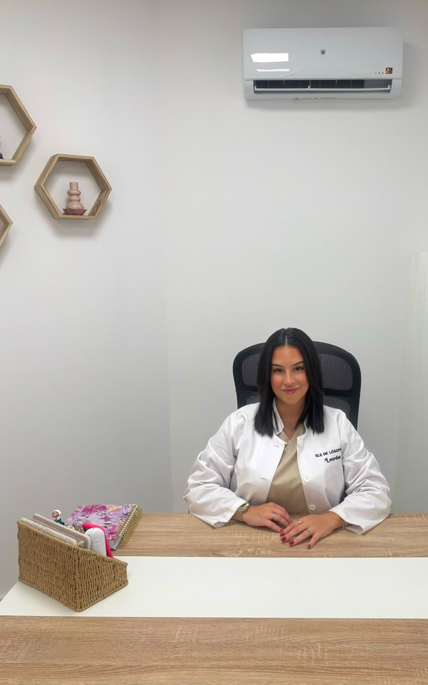
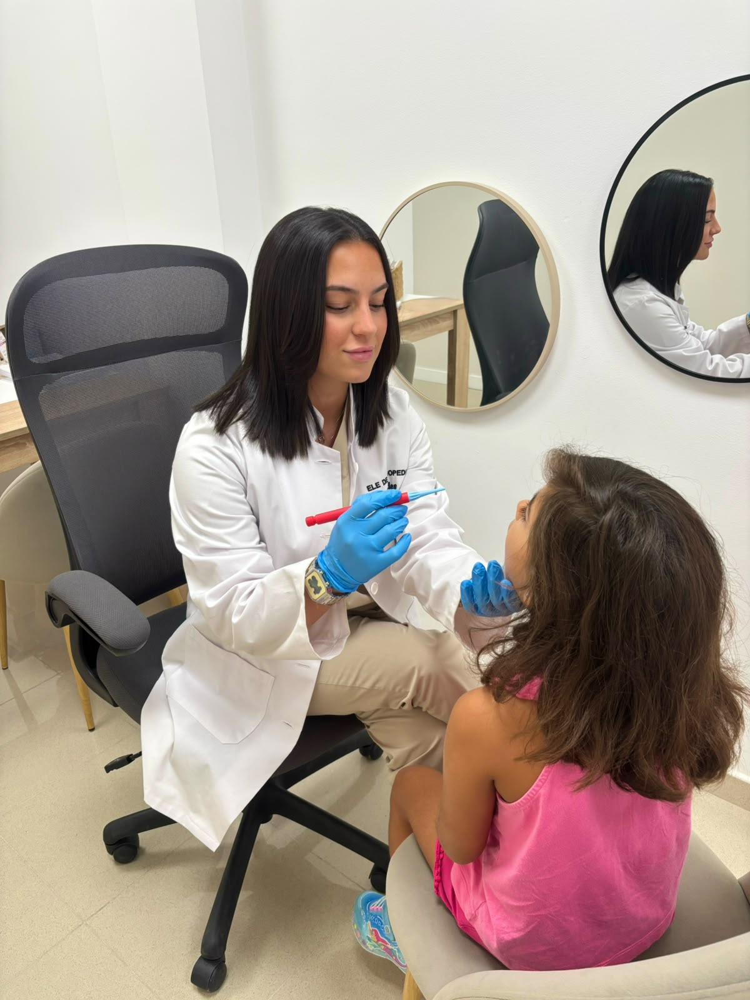
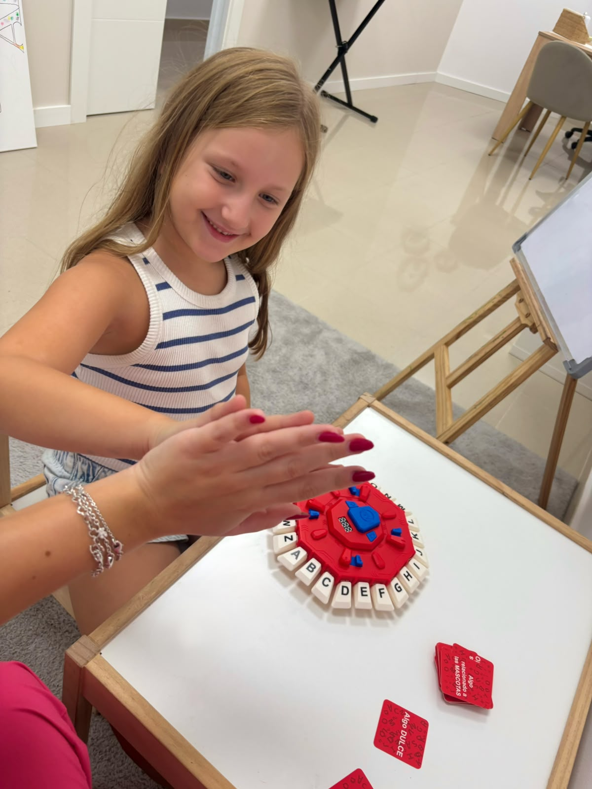

ELE DE LOGOPEDIA
Donde cada voz encuentra su camino
Logopedia para niños, adolescentes y adultos, desde una mirada cercana y personalizada.
Primera consulta gratuita Conoce nuestro enfoque y cuéntanos cómo podemos ayudarte.
Desliza para descubrir
Filosofía
Cada persona necesita su propio tiempo, sus propias herramientas y su propio camino.
Por eso, en ELE DE LOGOPEDIA, hacemos intervención personalizada.
Servicios
Cada persona es diferente.
Por eso, adaptamos la intervención a sus necesidades, objetivos y ritmo.
Selecciona un área para ver el detalle.
Primera consulta gratuita.
Forma de trabajar
Intervención personalizada

Cada persona necesita su propio tiempo, sus propias herramientas y su propio camino.
Equipo
Nuestro equipo
Conócenos
Así es por dentro
Un espacio pensado para que cada persona se sienta escuchada, acompañada y segura desde que entra por la puerta.
Toca cualquier fotografía para verla más grande.
Opiniones
Lo que dicen de nosotros
Contacto
Hablemos
Estamos aquí para escucharte y ayudarte a encontrar el camino adecuado.
Primera consulta gratuita.